สรุปทุกการทดลอง การแก้ไข และการวิเคราะห์ข้อมูลของ Task A (ทายจากข้อมูลถึงเมื่อวาน) และ Task A2 (ทายระหว่างวันตอน 16:00 / 16:30) สำหรับหุ้น KBANK และ ADVANC เรียงตามลำดับสไลด์ที่แนะนำ
CN340 · ข้อมูล ส.ค. 2559 – ต.ค. 2569 · โค้ด github.com/panifield/CN340-CNN_model_Stock_prediction · รูปทั้งหมดอยู่ที่ report/figures/
ทายว่าราคาปิดของวัน t เป็นเลขคู่หรือคี่ โดยแปลงข้อมูลราคาเป็น spectrogram ให้ CNN สกัด feature แล้วให้ ANN ทำนาย
| Task A | Task A2 | |
|---|---|---|
| เวลาที่ทาย | หลังตลาดปิดวัน t-1 | 16:00 หรือ 16:30 ของวัน t (ก่อนช่วงปิดตลาด ATC) |
| ข้อมูล input | ราคารายวัน 30 วันล่าสุด (t-30 ถึง t-1) | แท่งราคา 1 ชั่วโมง 36 แท่งล่าสุด + ราคา ณ เวลาที่ทาย |
| แหล่งข้อมูล | raw_data/ ส.ค. 2559 – ส.ค. 2569 (2,433 วัน/หุ้น) | Yahoo Finance รายชั่วโมง ต.ค. 2566 – ต.ค. 2569 (720 วัน/หุ้น) |
| Label | floor(ราคาปิด) % 2 ใช้ส่วนจำนวนเต็ม เพราะ KBANK มีราคา .5 (เช่น 162.5 นับเป็น 162 = คู่) · ราคาปิดทางการจาก raw_data | |
| สัดส่วนคู่ (10 ปี) | KBANK 48.7% · ADVANC 51.4% (สมดุล ไม่ต้องปรับ class weight) | |
อาจารย์อนุญาตให้ใช้ข้อมูลช่วงไหนก็ได้ ช่วงแรกทดลองบนข้อมูลตั้งแต่ 7 ก.ย. 2568 แล้วขยายเป็น 10 ปี (A) และทั้งหมดที่มี (A2)
ข้อมูลแต่ละสัญญาณถูกแปลงด้วย STFT เป็นภาพ แล้วซ้อนเป็นหลาย channel ให้ CNN อ่านเหมือนภาพสี
flowchart LR A["ราคา 30 วัน / 36 แท่งชั่วโมง"] --> B["แยกสัญญาณ
return · gap · high-low · volume"] B --> C["STFT → spectrogram
(ภาพ freq × time ต่อ channel)"] C --> D["CNN
Conv 3×3 ×2 + BatchNorm"] D --> E["ย่อ feature (bottleneck 8)"] F["feature ราคา ณ เวลาที่ทาย
คู่/คี่ตอนนี้ · ช่วงราคา · ระยะจาก open/high/low"] --> G["ANN
Dense 64 → 16"] E --> G F --> H["ทางลัด (skip MLP)"] G --> I(("P(คี่)")) H --> I
Spectrogram ของวันคู่และวันคี่ดูไม่ต่างกัน ผลต่างเฉลี่ยของสองกลุ่ม (แถวล่าง) เกือบเป็นสีขาวทั้งภาพ
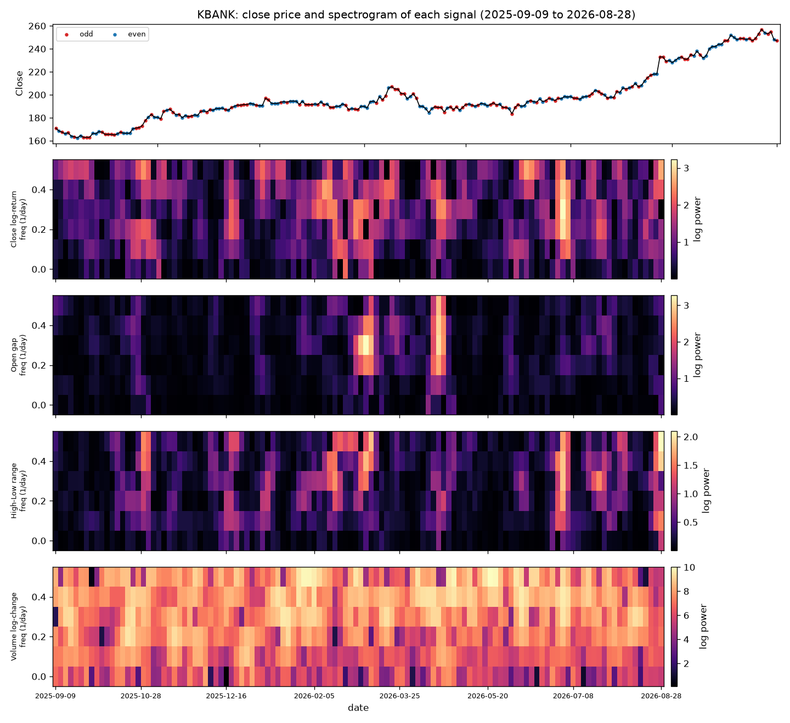
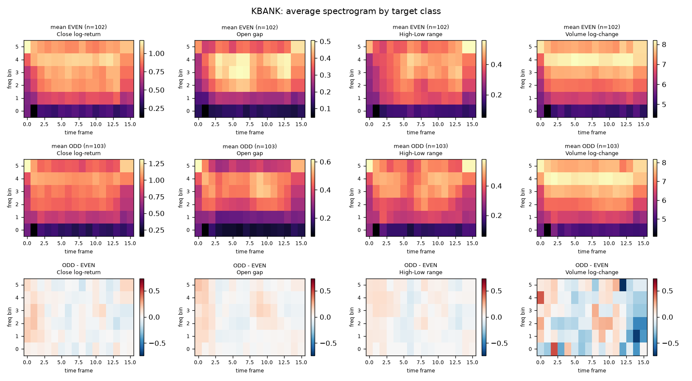
ราคาขยับเป็นเลขคู่ (คู่/คี่เหมือนเดิม) กับเลขคี่ (คู่/คี่สลับ) บ่อยพอ ๆ กัน คู่/คี่ของวันนี้จึงแทบไม่ขึ้นกับเมื่อวาน
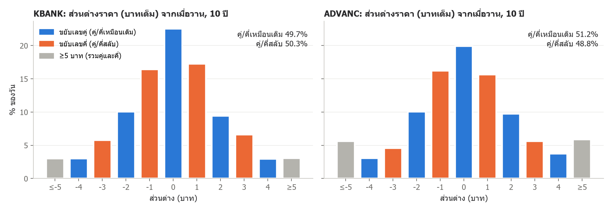
ทุกปัญหาที่เจอระหว่างทาง พร้อมวิธีที่ตรวจเจอและวิธีแก้
| # | ปัญหา | ตรวจเจอยังไง | แก้ยังไง | ผลกระทบ |
|---|---|---|---|---|
| 1 | Spectrogram ให้น้ำหนักข้อมูลเมื่อวาน (t-1) แค่ 0.5% ของวันกลางหน้าต่าง | ให้โมเดลทาย label ที่ควรทายได้ (ความผันผวน) แต่ KBANK ได้แค่ 45% | STFT แบบ boundary="even" สะท้อนข้อมูลภายในหน้าต่างมาเติมขอบ (ไม่ใช้ข้อมูลอนาคต) | label ความผันผวน 45% → 84% |
| 2 | ยังไม่ได้ตรวจว่ามี data leak หรือเปล่า | - | เขียนเทส: สุ่มแก้ข้อมูลตั้งแต่เวลาที่ทายเป็นต้นไป แล้วเช็คว่า input ไม่เปลี่ยน และมีตัวควบคุมยืนยันว่าเทสจับ leak ได้ | ไม่พบ leak ทั้ง A และ A2 (ครอบคลุม input ทุกแบบ) |
| 3 | ตอนแรกเลือกโมเดลจากผล test เพียงชุดเดียว (32 วัน) | ช่วงที่การเดาสุ่มทำได้ ±17% กว้างเกินจะสรุปได้ | เปลี่ยนเป็น walk-forward + holdout, ยืนยันบนข้อมูลอื่น และล็อกสมมติฐานก่อนทดสอบ | วิธีอันดับ 1 (57.5%) ถูกเปิดโปงว่าเป็นดวง |
| 4 | สคริปต์ ensemble ไม่โหลดผลของโมเดลสมาชิก | ensemble หายไปจากตารางรอบยืนยัน | แก้ให้โหลดผลของสมาชิกทุกตัวก่อนรวม | รายงานครบทุกวิธี |
| 5 | ราคารายวันจาก Yahoo ผิดหลายวันในปี 2567 และมีแถวหลอก (7 ต.ค. 2568: Volume = 0, OHLC เท่ากันหมด) | เทียบกับ raw_data ทีละวัน | ใช้ label จาก raw_data เป็นหลัก ใช้ Yahoo เฉพาะหลัง 28 ส.ค. 2569 และตัดแถว Volume = 0 | label ถูกต้องทุกวัน (เทสยืนยันแล้ว) |
| 6 | แท่ง Yahoo ตั้งชื่อตามเวลา "เริ่ม" แท่ง "16:00" จึงครอบคลุม 16:00–16:30 | ตรวจเวลาของแท่งและเทียบราคาแท่งสุดท้ายกับราคาปิด | ทาย ณ 16:00 ใช้แท่งถึง 15:00 เท่านั้น และเทส leak แยกตามเวลาที่ทาย | ไม่ใช้ข้อมูลที่ยังไม่เกิดขึ้น |
| 7 | CNN+ANN ของ A2 เรียนกฎง่าย ๆ ไม่ได้ (49.9% ขณะที่กฎได้ 55.9%) | เทียบกับ baseline "ทายตามคู่/คี่ตอนนี้" และ logistic regression | feature จาก CNN 256 ค่ากลบ feature สำคัญ 1 ค่า → ย่อ CNN เหลือ 8 ค่า และเพิ่มทางลัด (skip MLP) จาก feature ราคาไปที่ output | ช่วงราคา 0.5 บาท: 50.9% → 61.1% |
| 8 | การรันค้าง เพราะเครื่องเข้าโหมดประหยัดพลังงาน | CPU time ของ process ไม่เพิ่ม | เพิ่มการแสดงความคืบหน้า และรันเฉพาะวิธีที่จำเป็น | รันจบใน ~25 นาที |
ก่อนแก้ โมเดลแทบมองไม่เห็นข้อมูล 3 วันล่าสุด หลังแก้ โมเดลทายความผันผวนได้ 73–84% แต่คู่/คี่ยังเท่าการเดา
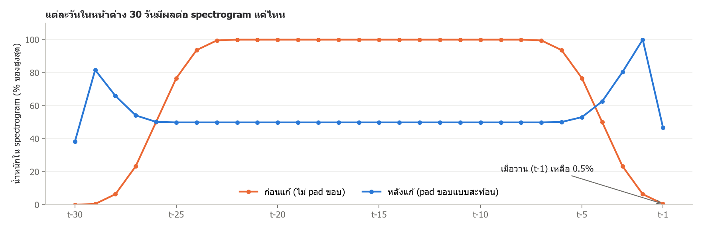
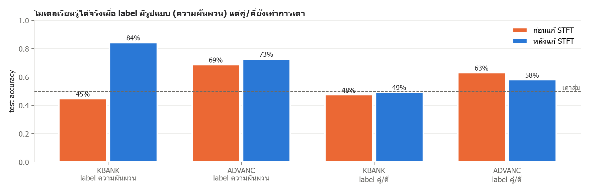
ยิ่งลองหลายวิธี ยิ่งมีโอกาสเจอตัวเลขสวยโดยบังเอิญ จึงแยก "ข้อมูลที่ใช้เลือก" ออกจาก "ข้อมูลที่ใช้พิสูจน์" ทุกครั้ง
ไฟล์ล็อกสมมติฐาน: A/experiments/clustering/preregistration.md, A2/analysis/preregistration.md
ไม่มีวิธีไหนหลุดจากช่วงที่การเดาสุ่มทำได้ (แถบเทา) และการเพิ่ม layer ไม่ช่วย
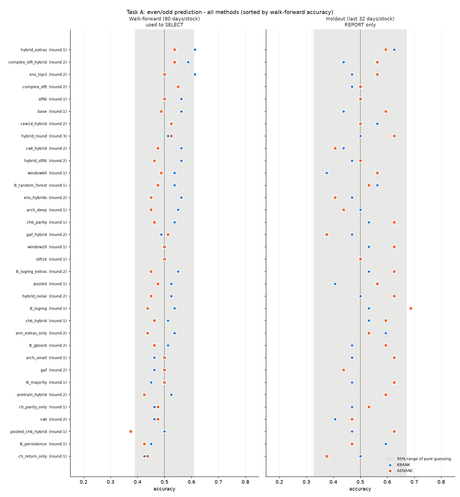
| กลุ่ม | ที่ลอง | walk-forward |
|---|---|---|
| ขนาดโมเดล | CNN 1 ชั้น (441 params) / 2 ชั้น / 4 ชั้น (520k params) | 48–53% |
| ปรับ spectrogram | ย้อนหลัง 20/30/60 วัน, STFT window 6/10/16 | 50–53% |
| แปลงเป็นภาพแบบอื่น | Wavelet (CWT), Gramian Angular Field, STFT เก็บ phase, 1D-CNN | 47–56% |
| Input | return อย่างเดียว, สัญญาณคู่/คี่, คู่/คี่เมื่อวานเข้า ANN, เลขกลม | 43–57.5% |
| เทคนิคการเทรน | รวม 2 หุ้น, noise augmentation, transfer learning, ensemble | 44–56% |
| ไม่ใช้ CNN | logistic regression, random forest, gradient boosting | 49–51% |
อันดับ 1 คือ hybrid_extras 57.5% (p = 0.034) ไม่ผ่านเกณฑ์ Bonferroni ซึ่งต้องได้ p < 0.0015
อันดับ 1 ของปี 2568 (57.5%) เหลือ 50.5% เมื่อทดสอบบนอีก 9 ปี และเทรนด้วยข้อมูล 10 เท่าก็ไม่ช่วย
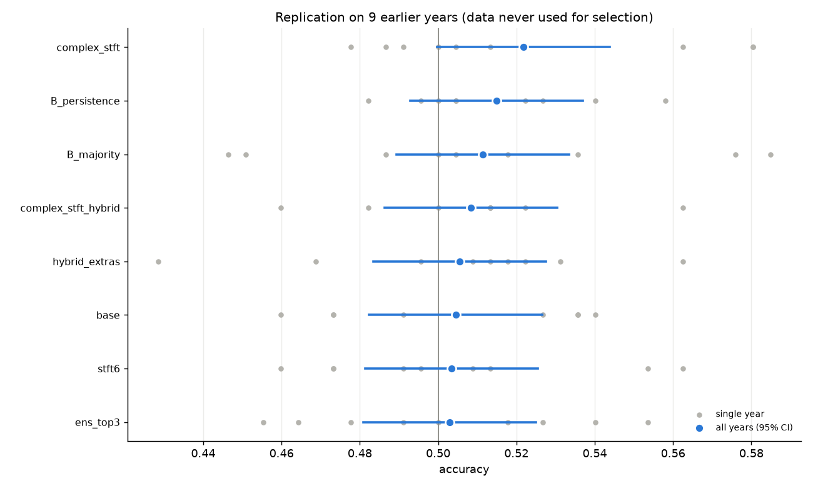
| ยืนยัน 9 ปี (~2,000 วัน) | ปี 2568 | 9 ปี |
|---|---|---|
hybrid_extras (อันดับ 1) | 57.5% | 50.5% |
complex_stft_hybrid (อันดับ 2) | 56.2% | 50.8% |
ens_top3 (อันดับ 3) | 55.6% | 50.3% |
| ทายคลาสเดิมตลอด | 47.5% | 51.1% |
| เทรน 10 ปี → ทดสอบปี 2568 (472 วัน) | acc | p |
|---|---|---|
| + feature เลขกลม | 53.4% | 0.077 |
| CNN 4 ชั้น | 52.5% | 0.145 |
| โมเดลหลัก (base) | 52.1% | 0.191 |
| ทายคลาสเดิมตลอด | 51.9% | 0.217 |
หลัง 16:00 ราคาปิดเท่าเดิม 38–40% ของวัน และขยับ ±1 ช่วงราคาประมาณ 45% ที่เหลือ ผลต่อคู่/คี่ขึ้นกับว่าช่วงราคาเป็น 0.5 หรือ 1 บาท
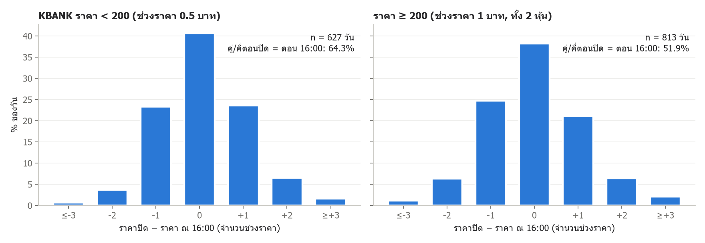
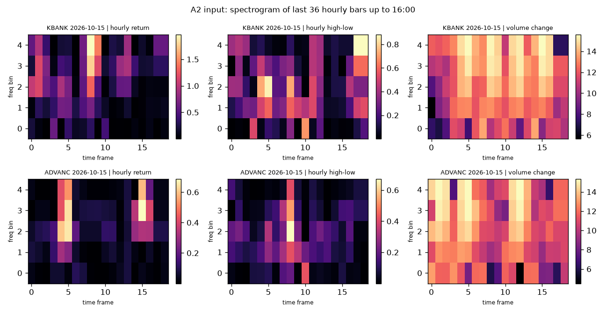
CNN+ANN หลังแก้โครงสร้างเรียนกฎช่วงราคา 0.5 บาทได้ แต่ไม่ชนะกฎ และ CNN อย่างเดียวได้ ~50% ทุกกรณี
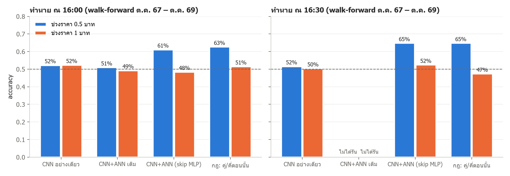
| วิธี (walk-forward 982 วัน) | ณ 16:00 | ณ 16:30 |
|---|---|---|
| CNN+ANN (skip MLP), โมเดลหลัก | 53.5% | 57.3% |
| กฎ: ทายตามคู่/คี่ตอนนี้ | 55.9% | 54.3% |
| Logistic regression | 55.6% | 55.7% |
| CNN อย่างเดียว | 52.2% | 50.8% |
| CNN+ANN เดิม | 49.9% | ไม่ได้รัน |
กฎช่วงราคา 0.5 บาทผ่านการยืนยันบนข้อมูลที่ไม่เคยใช้ (66–71%) ส่วนรูปแบบที่เจอหลังดูข้อมูล (ADVANC ทายตรงข้าม) ไม่ผ่าน
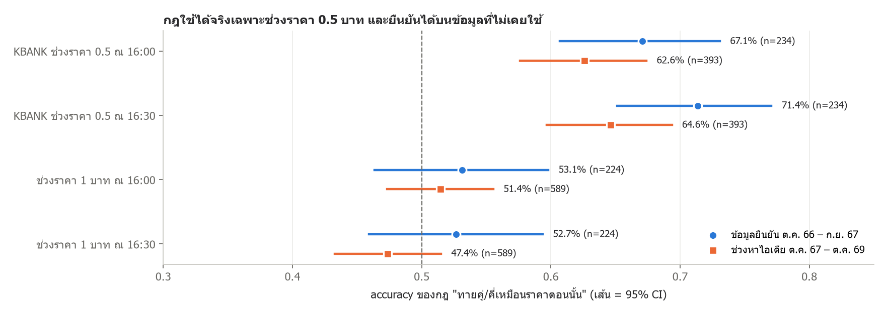
| สมมติฐาน (เกณฑ์ p < 0.0167) | ช่วงหาไอเดีย | ข้อมูลยืนยัน | ผล |
|---|---|---|---|
| H1: ช่วงราคา 0.5 บาท ณ 16:00 → คู่/คี่เหมือนตอนนี้ | 62.6% | 66.4% (n=244) | ผ่าน (p ≈ 10⁻⁷) |
| H2: KBANK ช่วงราคา 0.5 บาท ณ 16:30 | 64.6% | 71.4% (n=234) | ผ่าน (p ≈ 10⁻¹¹) |
| H3: ADVANC ณ 16:30 → ทายตรงข้าม | 54.6% | 47.3% (n=224) | ไม่ผ่าน |
AUC ไม่ขึ้นกับ threshold และยืนยันผลเดิม: Task A ได้ ~0.50 ทุกมุม ส่วน A2 ได้ 0.61–0.65 เฉพาะวันที่ช่วงราคาเป็น 0.5 บาท
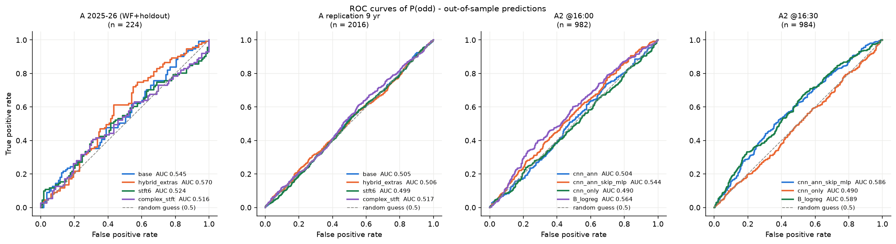
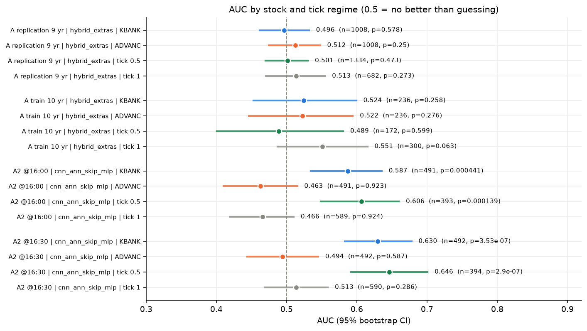
| แหล่ง / โมเดล | n | AUC | p (AUC > 0.5) |
|---|---|---|---|
A ทดสอบซ้ำ 9 ปี, hybrid_extras | 2,016 | 0.506 | 0.32 |
| A2 16:00, CNN+ANN เดิม | 982 | 0.504 | 0.42 |
| A2 16:00, CNN+ANN (skip MLP) | 982 | 0.544 | 0.009 |
| A2 16:30, CNN+ANN (skip MLP) | 984 | 0.586 | 2×10⁻⁶ |
| A2 16:30, เฉพาะช่วงราคา 0.5 บาท | 394 | 0.646 | 3×10⁻⁷ |
| A2 16:30, เฉพาะช่วงราคา 1 บาท | 590 | 0.513 | 0.29 |
ปรับ threshold หรือเปลี่ยน label ไม่ได้ทำให้ทายได้จริง ที่ดูดีขึ้นมาจากการมองย้อนหลังหรือคลาสไม่สมดุล
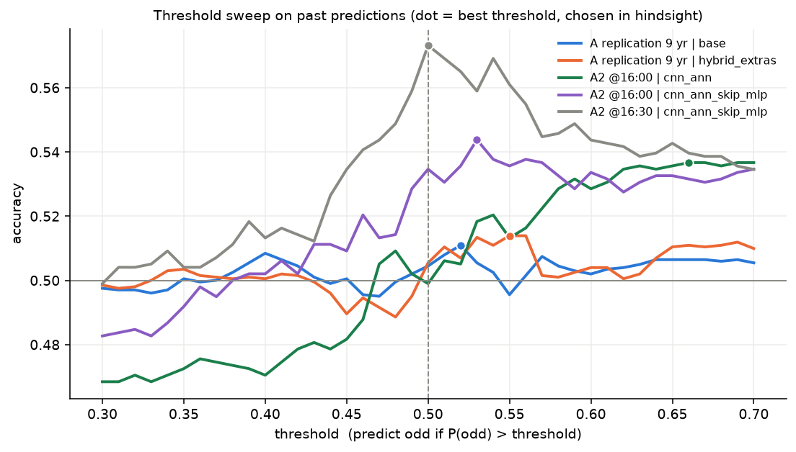
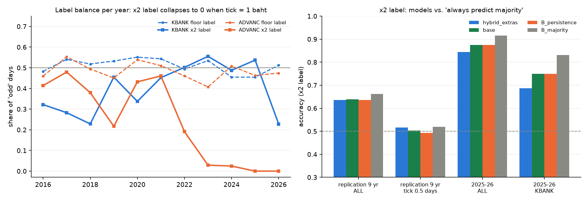
ทั้ง transfer learning จากข้อมูล 8 ปี และการค้นหา hyperparameter อัตโนมัติ 50 รอบ ไม่ทำให้ดีขึ้นบนข้อมูลที่ไม่เคยเห็น
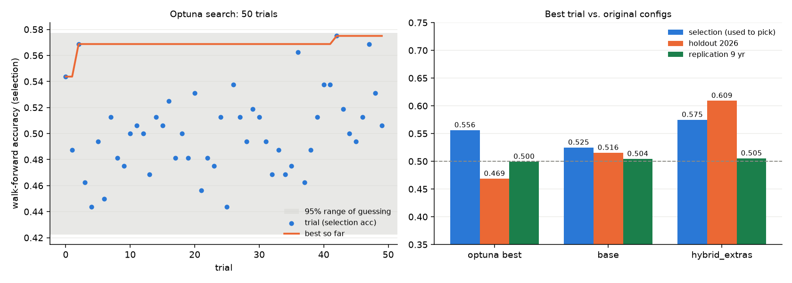
| Pretrain ปี 2559–2566 → fine-tune | WF | holdout |
|---|---|---|
| fine-tune ทั้งโมเดล (lr 1e-4) | 52.5% | 46.9% |
| freeze CNN เทรนแค่ ANN | 53.7% | 48.4% |
| base (เทรนปีเดียว) | 52.5% | 51.6% |
| Optuna 50 trial | ใช้เลือก | holdout | 9 ปี |
|---|---|---|---|
| best trial | 55.6% | 46.9% | 50.0% |
base | 52.5% | 51.6% | 50.4% |
hybrid_extras | 57.5% | 60.9% | 50.5% |
Spectrogram + CNN ไม่ได้เพิ่มข้อมูลเกี่ยวกับคู่/คี่ สิ่งเดียวที่ทายได้คือกลไกช่วงราคา 0.5 บาทช่วงท้ายตลาด ซึ่ง CNN+ANN เรียนได้เมื่อป้อน feature ราคาตอนนั้นเข้าไปตรง ๆ
| คำถาม | คำตอบจากข้อมูล |
|---|---|
| ทายคู่/คี่จากข้อมูลถึงเมื่อวานได้ไหม | ไม่ได้ ~50% (34 วิธี, 9 ปี, ข้อมูล 10 ปี) |
| ทายระหว่างวันได้ไหม | ได้เฉพาะช่วงราคา 0.5 บาท: 62–71% (ยืนยันแล้ว) |
| CNN บน spectrogram ช่วยไหม | ไม่ช่วย CNN อย่างเดียวได้ ~50% ทุกการทดลอง |
| โมเดลใหญ่ขึ้นหรือข้อมูลมากขึ้นช่วยไหม | ไม่ช่วยใน A ส่วน A2 ช่วยให้วัดผลได้แม่นขึ้น |
| ปรับ threshold / label ×2 / pretrain / Optuna ช่วยไหม | ไม่ช่วย ทุกวิธีกลับมาที่ ~50% บนข้อมูลที่ไม่เคยเห็น |